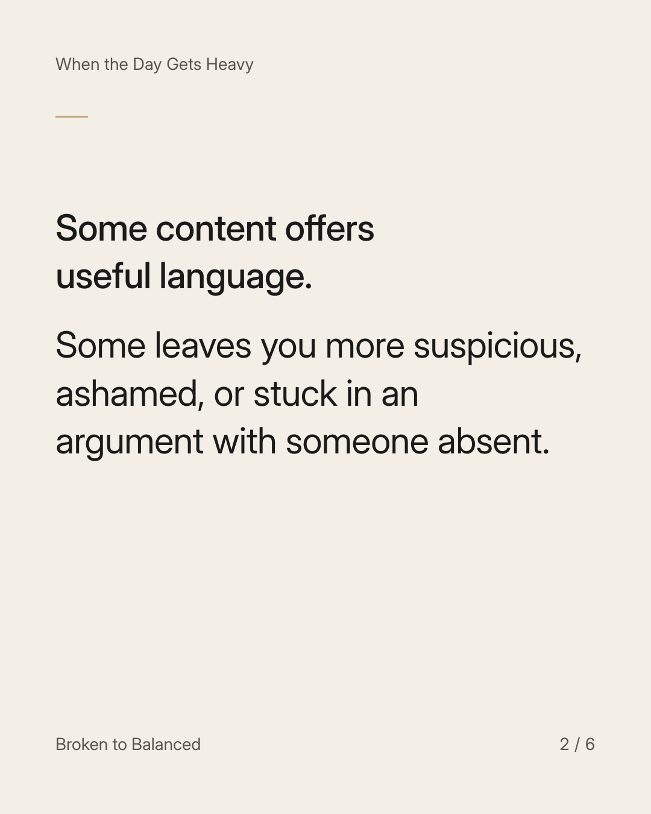
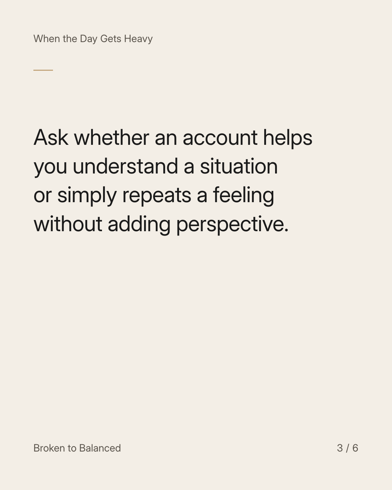
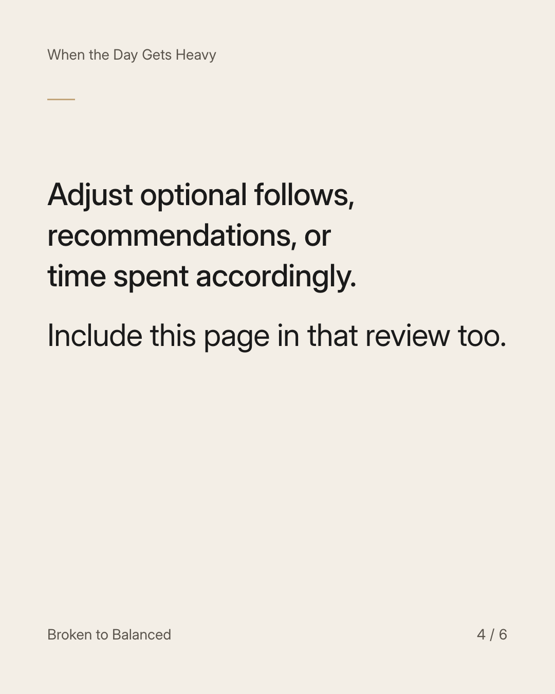
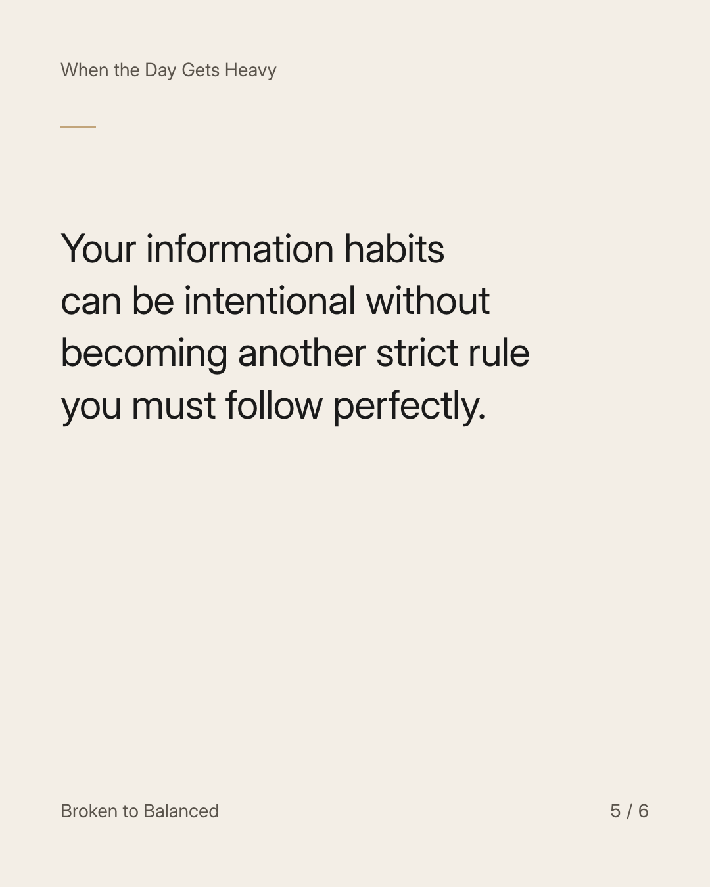
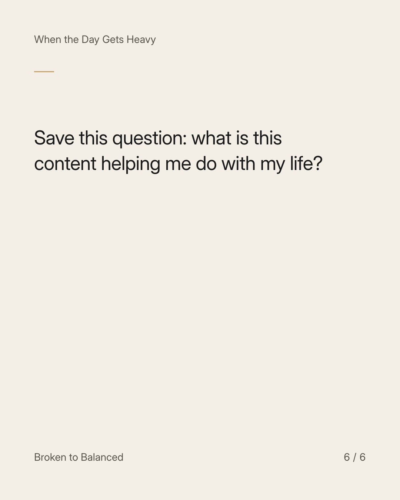

Exact text and accessibility text
Notice what the feed leaves you carrying after you close it.
Slide 1 of 6. Notice what the feed leaves you carrying after you close it.


Exact text and accessibility text
Some content offers useful language. Some leaves you more suspicious, ashamed, or stuck in an argument with someone absent.
Slide 2 of 6. Some content offers useful language. Some leaves you more suspicious, ashamed, or stuck in an argument with someone absent.


Exact text and accessibility text
Ask whether an account helps you understand a situation or simply repeats a feeling without adding perspective.
Slide 3 of 6. Ask whether an account helps you understand a situation or simply repeats a feeling without adding perspective.


Exact text and accessibility text
Adjust optional follows, recommendations, or time spent accordingly. Include this page in that review too.
Slide 4 of 6. Adjust optional follows, recommendations, or time spent accordingly. Include this page in that review too.


Exact text and accessibility text
Your information habits can be intentional without becoming another strict rule you must follow perfectly.
Slide 5 of 6. Your information habits can be intentional without becoming another strict rule you must follow perfectly.


Exact text and accessibility text
Save this question: what is this content helping me do with my life?
Slide 6 of 6. Save this question: what is this content helping me do with my life?
Exact caption
Plain-text fallback: select and copy the caption.